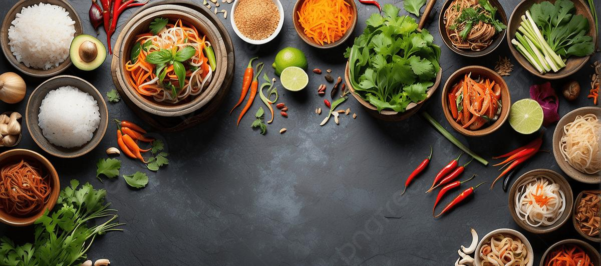

รสชาติแห่งเอเชีย 4 ประเทศ
ก้าวข้ามความคุ้นเคย สู่การเดินทางค้นพบเมนูใหม่ๆที่มีรสชาติอันเป็นเอกลักษณ์และลึกซึ้ง
ทวีปเอเชียคือแหล่งกำเนิดอารยธรรมอาหารที่ยิ่งใหญ่ที่สุดในโลก วัฒนธรรมการกินไม่ได้เป็นเพียงการหล่อเลี้ยงชีวิต หากแต่เป็นภาพสะท้อนของความผูกพันอันลึกซึ้งระหว่างมนุษย์ ธรรมชาติ ภูมิปัญญา และความเชื่อ สัมผัสความสดชื่นกลมกล่อมจากสมุนไพรเวียดนาม และกลิ่นอายเครื่องเทศของอินเดีย ลิ้มรสความเข้มข้นเผ็ดร้อนอันเป็นเอกลักษณ์แห่งอินโดนีเซีย พร้อมมนต์เสน่ห์อาหารเชื่อมทวีปสไตล์ตุรกี ร่วมออกเดินทางค้นพบประสบการณ์ความอร่อยหลากมิติ ที่พร้อมเสิร์ฟความประทับใจให้คุณในทุกคำ
ประเทศเวียดนาม
Vietnamวัฒนธรรมอาหารเวียดนามวางรากฐานอยู่บนปรัชญาเบญจธาตุ (หงูฮัญ - Ngũ Hành) และความสมดุลหยิน-หยาง โดยเน้นความสดใหม่ของวัตถุดิบ รสสัมผัสที่บางเบา สบายท้อง และไม่เลี่ยน วัฒนธรรมการกินของชาวเวียดนามให้ความสำคัญกับ ข้าว เป็นอาหารหลัก และมี น้ำปลาแท้ (Nước mắm) ร่วมกับสมุนไพรสดนานาชนิด เช่น สะระแหน่ ผักแพว โหระพาเวียดนาม และผักชีใบเลื่อย เป็นหัวใจชูรสชาติอันเป็นเอกลักษณ์
รสชาติอาหารเวียดนามโดดเด่นด้วยความกลมกล่อม ละมุนละไม มีทั้งเปรี้ยว หวาน เค็ม และเผ็ดอ่อน ๆ ที่ผสานเข้ากันอย่างลงตัว สำหรับมารยาทบนโต๊ะอาหาร ชาวเวียดนามนิยมรับประทานอาหารพร้อมหน้าในครอบครัว โดยใช้ตะเกียบและช้อน การคีบอาหารชิ้นที่ดีที่สุดให้แก่ผู้ใหญ่หรือแขกผู้มาเยือนถือเป็นธรรมเนียมแสดงความเคารพ ในวาระเทศกาลสำคัญอย่าง เทศกาลเต๊ต (Tết - ตรุษเวียดนาม) ทุกครอบครัวจะร่วมกันห่อ บั๋นจึง (Bánh chưng) ข้าวต้มมัดญวณสี่เหลี่ยมห่อใบตอง สัญลักษณ์แห่งผืนแผ่นดินอันอุดมสมบูรณ์
- เมนูเด่น: เฝอ (Phở), บั๋นหมี่ (Bánh mì), บุ๋นจ๋า (Bún chả)
- รสชาติหลัก: สดชื่น กลมกล่อม ละมุน ไม่มันเลี่ยน หอมกลิ่นสมุนไพรสด
- วัตถุดิบสำคัญ: น้ำปลาฟู้โกว๊ก (Phú Quốc), ผักสมุนไพรสด, แผ่นแป้งข้าวเจ้า

ประเทศอินเดีย
Indiaวัฒนธรรมอาหารอินเดียผูกพันอย่างลึกซึ้งกับปรัชญาอายุรเวทโบราณ ซึ่งมองว่าอาหารคือยารักษาและปรับสมดุลธาตุในร่างกาย เอกลักษณ์อันเกรียงไกรของครัวอินเดียคือศาสตร์แห่งการคั่วและบด เครื่องเทศ (Masala) นับสิบชนิด เช่น ขมิ้น ลูกผักชี ยี่หร่า กระวาน กานพลู และพริกแห้ง เพื่อสร้างมิติกลิ่นรสที่ซับซ้อนและเปี่ยมสรรพคุณทางยา โดยแบ่งตามภูมิศาสตร์อย่างชัดเจน คือภาคเหนือเน้นแป้งโรตี นาน ผลิตภัณฑ์นม เนยใส (Ghee) ขณะที่ภาคใต้เน้นข้าว กะทิ และแกงรสเปรี้ยวเผ็ด
รสชาติอาหารอินเดียเข้มข้น หอมตลบอบอวล เผ็ดร้อนลึกซึ้ง และมันนัวจากโยเกิร์ตกับเนยใส มารยาทสำคัญบนโต๊ะอาหารคือธรรมเนียมการรับประทานด้วย มือขวา อย่างประณีต โดยใช้ปลายนิ้วคลุกเคล้า สะท้อนถึงการสัมผัสอาหารด้วยประสาทสัมผัสทั้งห้า และการเสิร์ฟบนถาดรวม ตาลี (Thali) เพื่อให้ได้รับรสชาติครบทั้ง 6 รส ในเทศกาลยิ่งใหญ่อย่าง ดิวาลี (Diwali - เทศกาลแห่งแสงสว่าง) ชาวอินเดียจะปรุงขนมหวานจากนมเนย เช่น กุหลาบจามุน และลัดดู เพื่อแจกจ่ายเป็นสิริมงคล
- เมนูเด่น: บัตเตอร์ชิกเกน (Butter Chicken), ไก่บริยานี (Biryani), ปาเลก ปานีร์ (Palak Paneer)
- รสชาติหลัก: หอมเครื่องเทศอบอวล เผ็ดร้อนลุ่มลึก นัวมันเนยใสและโยเกิร์ต
- วัตถุดิบสำคัญ: การัมมาซาลา, เนยใส (Ghee), ขมิ้นชัน, ถั่วดาล (Dal)

ประเทศอินโดนีเซีย
Indonesiaอินโดนีเซียเป็นดินแดนหมู่เกาะกว่าหมื่นเกาะที่เคยรู้จักกันในนาม "เกาะเครื่องเทศ (Spice Islands)" วัฒนธรรมอาหารจึงเต็มไปด้วยความจัดจ้านและหลากหลายอันหาใครเทียบยาก รากฐานของการปรุงอาหารคือการตำพริกแกงสด ที่เรียกว่า บุมบู (Bumbu) ผสานกับข่า ตะไคร้ ขมิ้น กะทิคั้นสด กะปิอินโดนีเซีย (Terasi) และ ซีอิ๊วหวานเคจัปมานิส (Kecap Manis) ซึ่งให้ความหวานนุ่มลึกไม่เหมือนใคร
รสชาติอาหารอินโดนีเซียมีความเข้มข้น จัดจ้าน เผ็ดร้อนจาก ซัมบัล (Sambal) น้ำพริกคู่โต๊ะที่มีมากกว่าร้อยสูตร ผสานความมันละมุนของหัวกะทิและความหอมกรุ่นของสมุนไพร มารยาทการรับประทานเน้นการล้างมือให้สะอาดและใช้มือขวา วัฒนธรรมที่โดดเด่นคือการรับประทานข้าวแกงแบบ นาซีปาดัง (Nasi Padang) ที่ยกจานกับข้าวมาวางเต็มโต๊ะ และในพิธีมงคลสำคัญ จะต้องจัดทำ ตุมเป็ง (Tumpeng) ข้าวขมิ้นสีทองทรงกรวยล้อมรอบด้วยกับข้าว 7 ชนิด เพื่อเป็นการขอบคุณต่อพระผู้เป็นเจ้าและบรรพชน
- เมนูเด่น: เรนดังเนื้อ (Rendang), นาซีกอเร็ง (Nasi Goreng), ซาเต๊ะไก่ (Sate Ayam)
- รสชาติหลัก: เข้มข้น ดุดัน มันกะทิ เผ็ดร้อนซัมบัล และหวานกลมกล่อมจากซีอิ๊วหวาน
- วัตถุดิบสำคัญ: น้ำพริกซัมบัล (Sambal), ซีอิ๊วหวาน (Kecap Manis), กะทิสด, ข่าและตะไคร้

ประเทศตุรกี
Turkeyวัฒนธรรมอาหารตุรกีคือมรดกอันล้ำค่าจากห้องครัวพระราชวังของจักรวรรดิออตโตมันโบราณ ซึ่งตั้งอยู่ ณ จุดบรรจบระหว่างทวีปเอเชีย ยุโรป และตะวันออกกลาง อาหารตุรกีไม่เน้นการปรุงแต่งรสจนกลบวัตถุดิบ หากแต่เชิดชูความสดหวานตามธรรมชาติของเนื้อสัตว์ ผัก และผลไม้ โดยมี น้ำมันมะกอกบริสุทธิ์ (Zeytinyağı), โยเกิร์ตตุรกีรสเข้มข้น, มะเขือเทศฉ่ำ, ถั่วพิสตาชิโอ และสมุนไพรอย่างออริกาโนและมินต์แห้งเป็นแกนกลางสำคัญ
รสชาติอาหารตุรกีมีความกลมกล่อม สะอาด นุ่มนวล มีกลิ่นควันถ่านอันมีเสน่ห์จากการย่างเนื้อ (Kebap) และมีรสเปรี้ยวสดชื่นจากโยเกิร์ตและผงสุแมก (Sumac) วัฒนธรรมบนโต๊ะอาหารเน้นไมตรีจิตและการต้อนรับขับสู้ที่อบอุ่น เริ่มต้นมื้ออาหารด้วยจานเรียกน้ำย่อยชุด เมซเซ (Meze) พร้อมขนมปังอบร้อน และปิดท้ายด้วยการจิบ ชาตุรกี (Çay) ในแก้วแก้วทรงดอกทิวลิป ในช่วงเดือนรอมฎอน ชาวตุรกีจะรวมตัวกันละศีลอดด้วยซุปถั่วเลนทิลอุ่น และตบท้ายด้วย บาคลาวา (Baklava) ขนมพัฟฟ์กรอบสอดไส้พิสตาชิโอชุ่มน้ำเชื่อมกลิ่นกุหลาบ
- เมนูเด่น: อิสเคนเดอร์เคบับ (İskender Kebap), บาคลาวา (Baklava), พีเด (Pide)
- รสชาติหลัก: หอมควันย่างถ่าน กลมกล่อมนุ่มนวล เปรี้ยวสดชื่นโยเกิร์ต ไม่จัดจ้านเกินไป
- วัตถุดิบสำคัญ: น้ำมันมะกอก, โยเกิร์ตตุรกี, ถั่วพิสตาชิโอ, ผงสุแมก (Sumac)

ตารางเปรียบเทียบวัฒนธรรมอาหาร 4 ประเทศ
สรุปภาพรวมความแตกต่างและมิติของรสชาติ วัตถุดิบเด่น และวิธีการปรุงของ 4 ชาติแห่งเอเชียในรูปแบบที่เข้าใจง่าย
| ประเทศ | เอกลักษณ์รสชาติ | วัตถุดิบและเครื่องปรุงหลัก | วิธีปรุงที่นิยม | ประเพณี / วัฒนธรรมเด่น |
|---|---|---|---|---|
| เวียดนาม Vietnam | กลมกล่อม สดชื่น เค็มหวานละมุน มีความสมดุล 5 ธาตุ ไม่เลี่ยน | น้ำปลาแท้ (Nước mắm), สมุนไพรสด, แป้งข้าวเจ้า, พริกสด | การเคี่ยวน้ำซุปกระดูกยาวนาน, การนึ่ง, การห่อสดด้วยแป้ง | การคีบอาหารให้ผู้อาวุโส, การกินผักสดไม่อั้นคู่ทุกจาน |
| อินเดีย India | หอมเครื่องเทศอบอวล เผ็ดร้อนลึกซึ้ง มันนัวเนยและโยเกิร์ต | การัมมาซาลา, เนยใส (Ghee), ขมิ้น, เม็ดผักชี, ถั่วดาล | การผัดเครื่องเทศในน้ำมัน (Tadka), การอบโอ่งดินเผา (Tandoor) | การรับประทานด้วยมือขวาอย่างสำรวม, ถาดอาหารรวม (Thali) |
| อินโดนีเซีย Indonesia | เข้มข้น ดุดัน หอมมันกะทิ เผ็ดร้อนซัมบัล และหวานกลมกล่อม | พริกแกงบดสด (Bumbu), ซัมบัล, ซีอิ๊วหวาน, กะทิ, กะปิอินโด | การเคี่ยวน้ำแกงจนงวดแห้ง (Rendang), การผัดไฟแรง, การย่าง | การกินข้าวแกงปาดัง, ข้าวกรวยทองตุมเป็งในพิธีขอบคุณพระเจ้า |
| ตุรกี Turkey | หอมควันย่าง ละมุน สะอาดสดชื่น ไม่เผ็ดจัด เปรี้ยวโยเกิร์ต | น้ำมันมะกอก, โยเกิร์ต, มะเขือเทศ, ถั่วพิสตาชิโอ, สุแมก | การเสียบไม้ย่างเตาถ่าน (Kebap), การอบขนมอบฟิโล, การเคี่ยวซุป | การเสิร์ฟเมซเซก่อนเริ่มมื้อ, การจิบชาตุรกีปิดท้ายแสดงไมตรีจิต |